| 日付 | 2015年12月20日（日） |
|---|---|
| 山域 | 御坂･天子山塊 |
| メンバー | 家族（妻、長女・4歳、長男・2歳） |
| 山行形態 | 子連れ日帰り |
| アクセス | 車 |
| ルート (Map) | 本栖湖キャンプ場 (8:38) - (9:47) 展望台 - (10:42) 竜ヶ岳 (11:30) - (11:41) 下山道分岐点 - (12:43) 登山口 - (12:47) 本栖湖 (12:54) - (13:02) 本栖湖キャンプ場 |
今年の登り納めは竜ヶ岳に行くことにする。
富士山の近くにある山で、年賀状写真を撮るという目的も兼ねた山行だ。
この山を有名にしているのはダイヤモンド富士であり、
この時期はちょうど富士山の後ろから日の出が見られる。
広い駐車場に車を止める。標高905m。
広大な駐車場でスペースは余っているが、ダイヤモンド富士の撮影が目的と思われる
人々の車が多数停まっている。
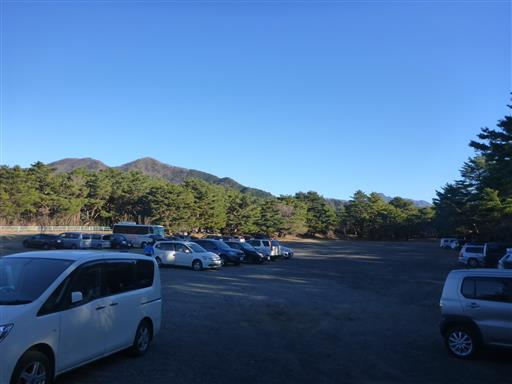
冬季閉鎖中のキャンプ場を抜けて登山口を目指す。
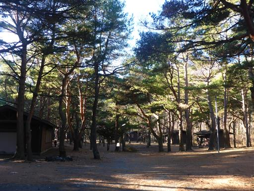
登山口に到着。朝の気温は-2℃で、早く登り始めないと寒い。
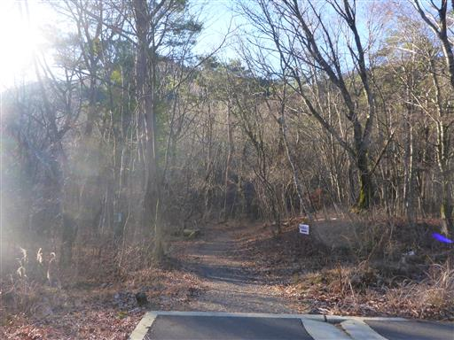
登山道は霜柱がいっぱい。10cmくらいまで成長している。
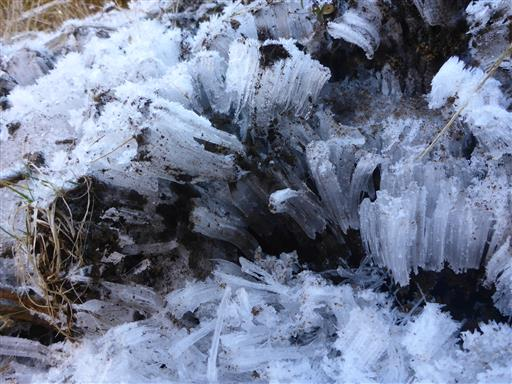
娘は足で霜柱を壊して遊んでいる。
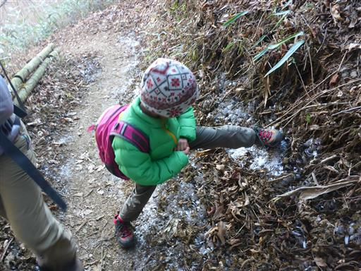
朝日を浴びて輝く美しい雑木林の中を歩いて行く。
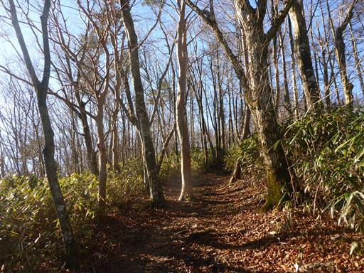
小さな休憩場所に到着。山頂で日の出を拝んだ登山者が続々と下山してくる。
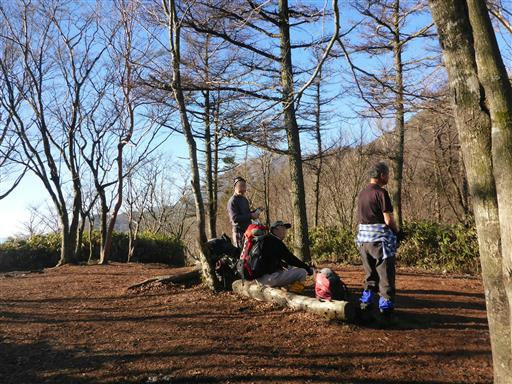
ここは富士山の展望台。残念ながら逆光だ。
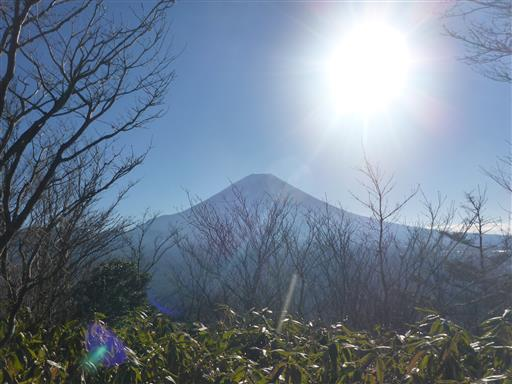
眼下には本栖湖が見える。
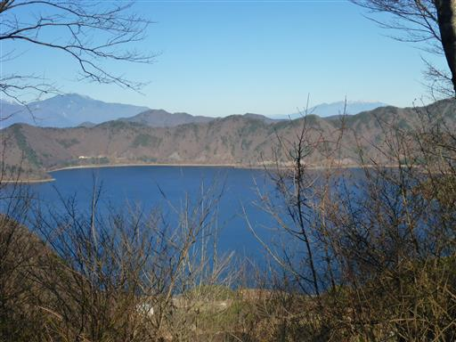
西側には南アルプスの白峰三山が白く輝いている。
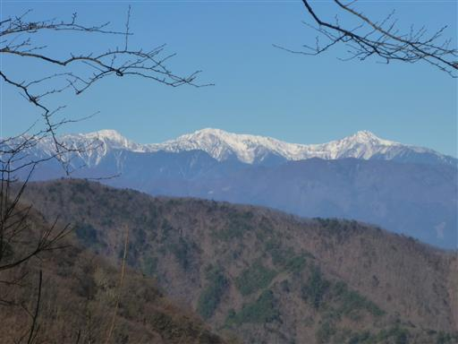
中腹からは笹原が広がる道になり展望が大きく広がる。
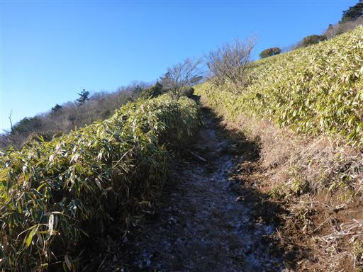
富士の樹海の向こうに御坂山塊の山々が並んでいる。
一番右端に見える山は三ツ峠山だ。
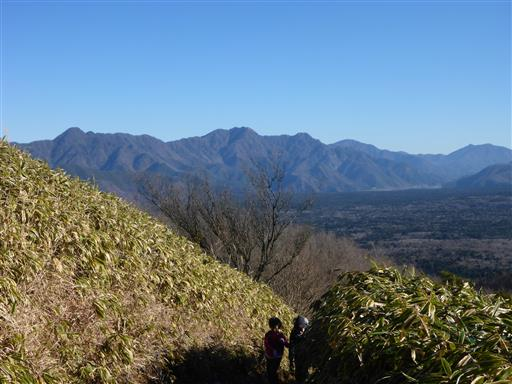
道は霜で真っ白だ。
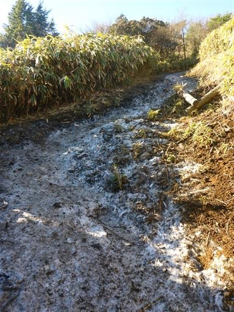
日当たりの良い場所ではそれらの霜が解けて泥だらけになっている。
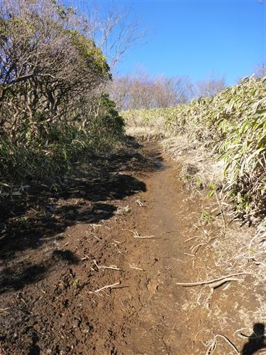
展望台に到着。
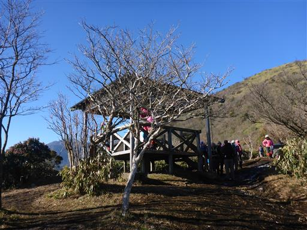
富士山が目の前に聳えている。
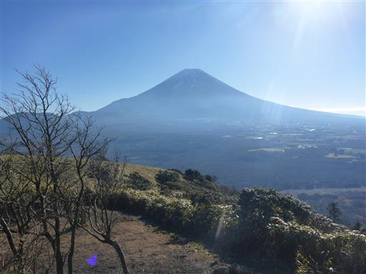
反対側はこれから向かう竜ヶ岳の丸いピークが見えている。
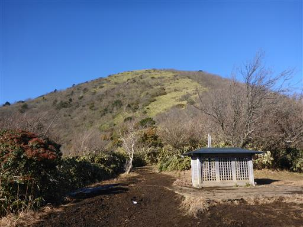
ずっと笹原の尾根が続く。緩やかな傾斜が続く登山道で非常に歩きやすい。
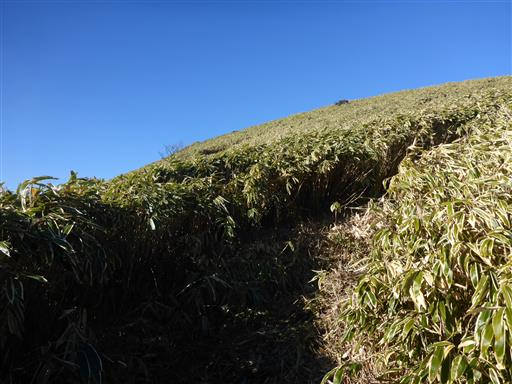
富士の斜面は、山頂から海までを美しい一本の曲線で結んでいる。
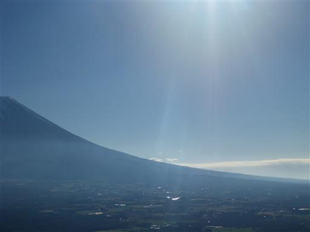
笹原の尾根の下方に、先ほど立ち寄った展望台が見えている。
今日は娘が快調に歩いている。
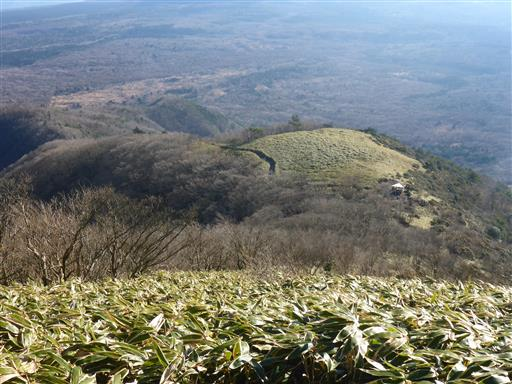
朝は相当冷えるのか、山頂付近は霜がかなり発達している。
非常に美しい造形だ。
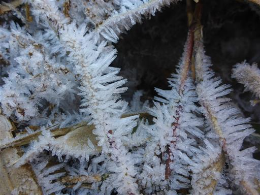
広々とした竜ヶ岳山頂に到着する。標高1485m。
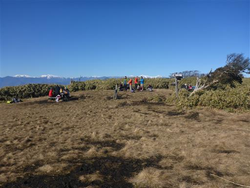
ここは富士山の大展望台。真正面に富士山が聳えている。
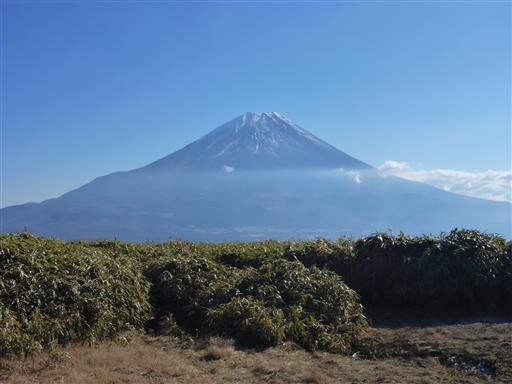
反対方向には南アルプスの山々が並んでいる。
見えているのは白く染まった赤石岳と荒川岳だ。
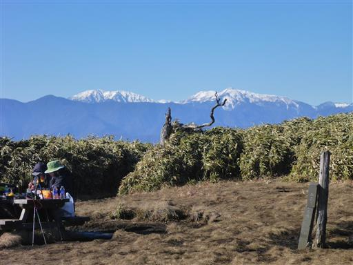
天子山塊の山々には雲がかかり始めている。
竜ヶ岳は天子山塊の一端にある山だ。
はるか昔、天子山塊の最高峰、毛無山に登ったのは良い思い出だ。
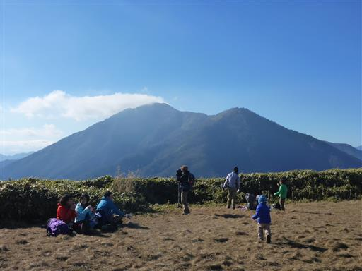
昼食を取ったら下山開始。眺めがよい道を下って行く。
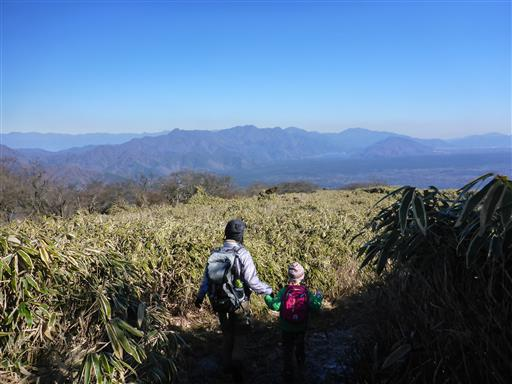
山頂からは見えなかった八ヶ岳もよく見える。
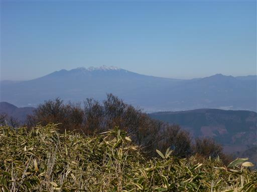
もちろん富士山も正面にはっきり見える。
陽が上り、逆光でなくなってきた。

遠く北アルプスらしき白い峰々も見えている。
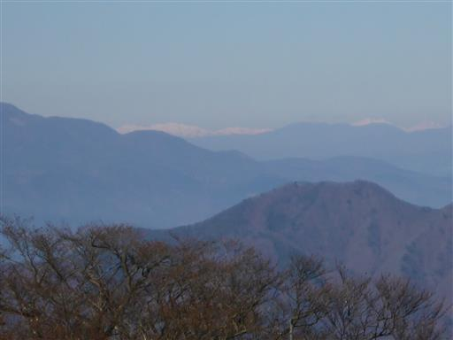
今回の山は周回コースを歩く。
山頂から少し下ったところから、北側に下る道に入って行く。
眼下には本栖湖が、木の間からちらちらと見える。
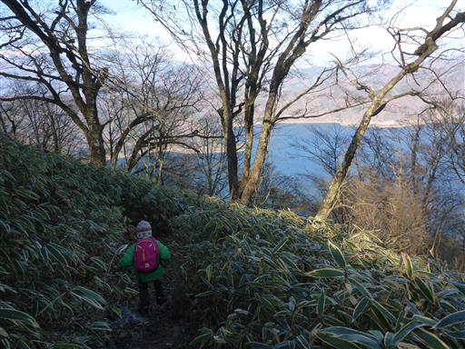
こちらの登山道は急斜面。土が流れて、階段が壊れている。
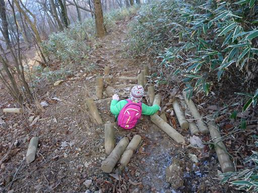
この辺りは雑木林に覆われている。雲が出てきて日が差さず暗い。
展望も、登山道の歩きやすさも、登りに使った道の方がはるかに良い。
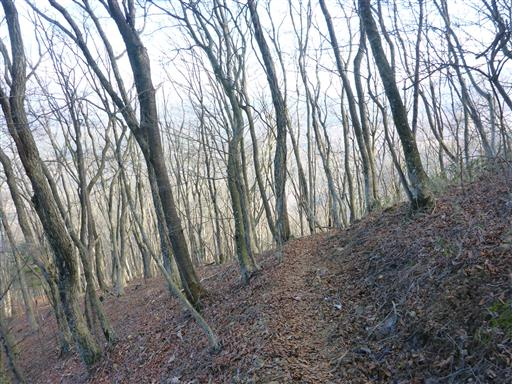
ミズナラの巨木。他にも立派なブナなどが多く見られる。
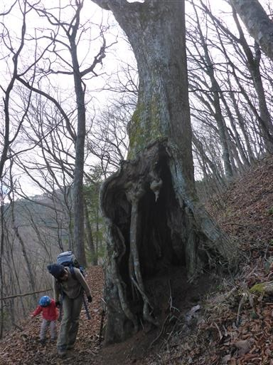
下山。最後の方は息子も歩いて下山した。
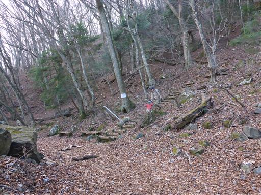
空を見上げると、もう竜ヶ岳方面は雲に覆われている。
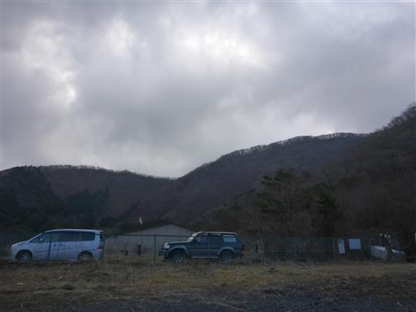
本栖湖に寄り道する。水の色は青くて美しい。
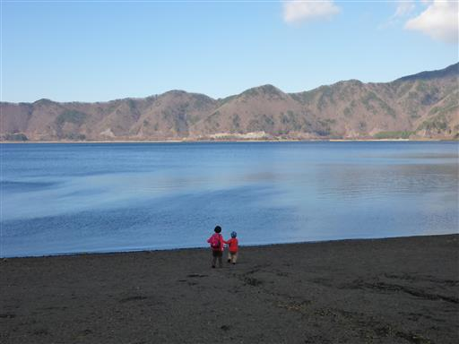
最後は車道を歩いて駐車場に向かう。
今回の山行は娘が機嫌よく、登りも下りもスムーズだった。
歩きやすい登山道で、展望も申し分なく、今年を締めくくるに相応しい山だった。
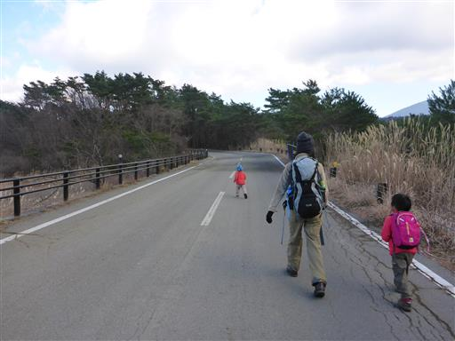